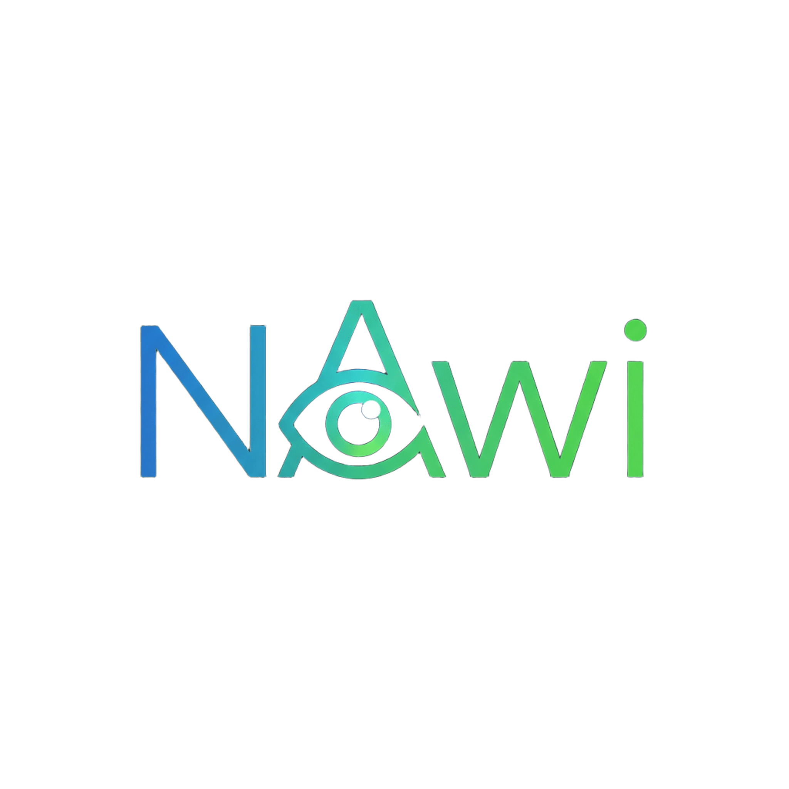

Si tienes preguntas, encontraste un error o necesitas ayuda con tu cuenta, puedes contactarnos directamente. Respondemos en un plazo razonable a través de correo electrónico.
Escríbenos a pmedrano566@gmail.com describiendo tu consulta o el problema que encontraste. Si es un error dentro de la app, incluye capturas de pantalla y los pasos para reproducirlo, así podremos ayudarte más rápido.
Escribir a soporteNAWI es una solución basada en inteligencia artificial para la detección y prevención de estafas digitales, pensada especialmente para poblaciones vulnerables en Bolivia.
Escríbenos a soporte indicando tu nombre de usuario registrado en la app y te ayudaremos a restablecer el acceso a tu cuenta.
Puedes solicitarlo desde nuestra página de eliminación de cuenta y datos.
Envíanos un correo describiendo el problema, con capturas de pantalla si es posible, y lo revisaremos lo antes posible.
Puedes consultar todos los detalles en nuestra Política de Privacidad.